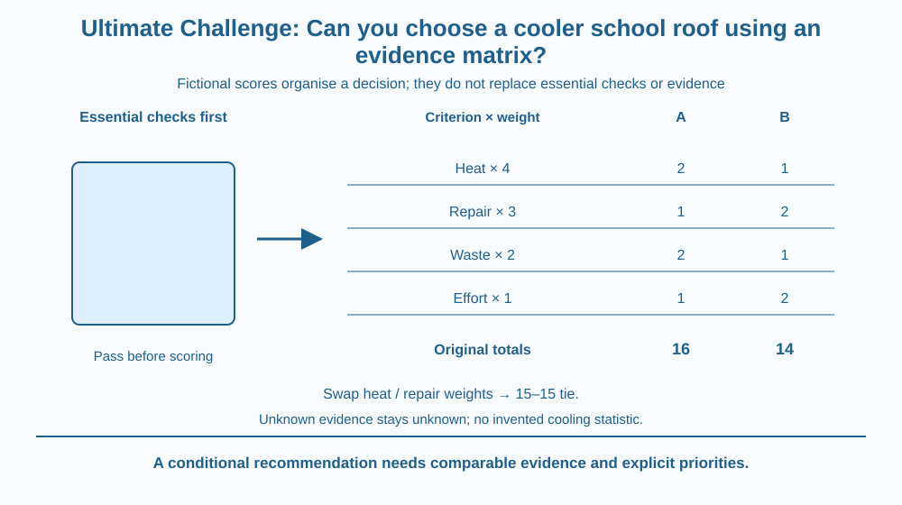

Choose between fictional school-roof options using an evidence matrix. Combine heat-related performance, repair, waste and effort without hiding uncertainty behind a total score. Keep essential structural and waterproofing requirements as conditions that a favourable score cannot cancel.
A school team sees two attractive roof proposals. One emphasises solar reflectance and limited added material. The other claims easier repair and lower installation effort. A colourful advertisement does not establish which is better for the school's actual needs.
Several lessons now connect: reflectance changes absorbed sunlight, heat-transfer paths affect indoor conditions, repair changes service life and material handling affects waste. The challenge is to compare those ideas consistently.
A decision needs a defined purpose and evidence for each claim. Adding attractive features without checking their relevance can create an impressive score for a poorly understood option.
Start with a common service requirement: compare options for the same roof area, intended use and relevant weather conditions. An option assessed on a cool cloudy day cannot be fairly compared with another assessed only in stronger sunshine without accounting for the difference.
Separate essential constraints from scored preferences. Structural suitability, waterproofing and appropriate installation must be assessed by responsible adults and qualified people. An option that fails an essential requirement cannot compensate merely by receiving a high reflectance score.
For this fictional classroom example, call the options A and B. A is a proposed reflective surface with a particular repair and material-use plan. B is a different roof treatment with another repair and effort profile. These descriptions do not certify any real product or construction method.
Use four criteria: heat-related performance, repairability, waste implications and implementation effort. Give them invented weights of 4, 3, 2 and 1. The weights express the fictional team's priorities; they are not measured scientific constants or national recommendations.
Score each criterion on an invented scale from 0 to 2, with larger scores better. Give A the scores 2, 1, 2, 1 and B the scores 1, 2, 1, 2. These are supplied exercise data, not measurements of actual roof technologies or promises of temperature reduction.
Multiply each score by its weight and sum. A gives 4×2 + 3×1 + 2×2 + 1×1 = 16. B gives 4×1 + 3×2 + 2×1 + 1×2 = 14. The maximum in this model is 20, since the weights sum to 10 and the highest score is 2.
The total does not make uncertain evidence certain. An unknown criterion should stay marked unknown until suitable evidence exists, rather than receiving an invented favourable score. Record the basis, limitations and confidence beside each supplied or assessed score.
Test sensitivity by changing a priority. Swap the heat and repair weights to 3 and 4 while keeping the other weights unchanged. Both options then score 15. The ranking depends partly on stated priorities, so reporting only the original winner hides an important decision condition.
Avoid double-counting closely related benefits. For example, absorbed-sunlight reduction and a predicted indoor-heat benefit may partly describe the same causal chain. A matrix needs well-defined criteria so one attractive mechanism is not rewarded several times without justification.
Draw a gate before a scoring table. The gate represents essential suitability checks; only options with adequate confirmation proceed to the preference comparison.
In the table, place criteria in rows and options in columns. Keep weights separate from scores so a reader can see whether a difference comes from evidence or from priorities. Add an evidence-status column.
At the end, write a conditional decision rather than a bare winner. For example, A ranks higher under the supplied scores and original weights, provided essential conditions are met. That sentence preserves the reasoning the total alone would hide.
The SVG shows an essential-check gate followed by a compact score matrix. Each row lists one criterion's fictional weight and the supplied A and B scores. The totals 16 and 14 follow the original weights.
A second line shows the 15–15 tie after swapping heat and repair priorities. An uncertainty marker reminds readers that missing evidence cannot be replaced with a convenient score.
No roof dimensions, measured cooling values or installation details are included. The diagram is a decision tool for a fictional paper project, not permission to climb onto a roof or apply a coating.

Indian schools experience varied roof materials, shading, weather and maintenance conditions. A suitable local decision needs information about that building rather than a universal claim that one treatment cools every classroom by the same amount.
Students can request already available drawings, product information or adult-provided observations. They should not climb roofs, touch hot surfaces, undertake structural inspections or install trial materials. Suitable professionals handle building assessment and work.
The matrix helps organise a discussion among people who value different outcomes. It makes trade-offs visible, but it does not replace measured evidence, building requirements or the judgement needed to define fair criteria.
Use paper and a calculator if desired. All quantities are fictional exercise inputs.
Explain why the tie does not mean every actual roof option is equivalent. It concerns these supplied scores and changed priorities only. Do not turn the numerical example into a real procurement or installation recommendation.
Why should waterproofing remain an essential condition rather than a low-weight preference that other features can outweigh? Distinguish a minimum acceptable service requirement from a desirable improvement.
Now imagine A's waste score has no evidence. Should the original total remain a confident 16? Explain how to record the missing basis and what further information is needed. A transparent uncertainty can improve the decision more than an impressive-looking unsupported total.
What must happen before an option passes to preference scoring?
Answer: B — Essential requirements act as a gate rather than a tradeable low-weight benefit.
Why does swapping heat and repair weights matter in the supplied example?
Answer: A — The supplied scores yield a tie under the altered weights, exposing ranking sensitivity.
A supplied favourable waste score lacks evidence for a real option. What is the useful action?
Answer: C — A matrix organises evidence; it does not justify inventing a missing fact.
Produce a one-page recommendation using the supplied fictional data. Include the original totals, the changed-weight tie, essential checks and evidence still needed for a real school.
Connect at least three earlier mechanisms to specific criteria: solar absorption, thermal losses, repair life or material-flow consequences. State the conditions under which the ranking holds. Your result should be a reviewable argument, with no invented cooling statistic, product endorsement or student rooftop activity.
A precise total can conceal an uncertain decision. Arithmetic can be completely correct while its scores lack evidence or its priorities remain disputed. Showing both the calculation and its assumptions makes the matrix more useful than displaying a winner with extra decimal places.
A useful roof decision combines essential checks, comparable evidence and explicit priorities; weighted scores organise the argument but cannot manufacture missing facts or cancel a failed requirement.